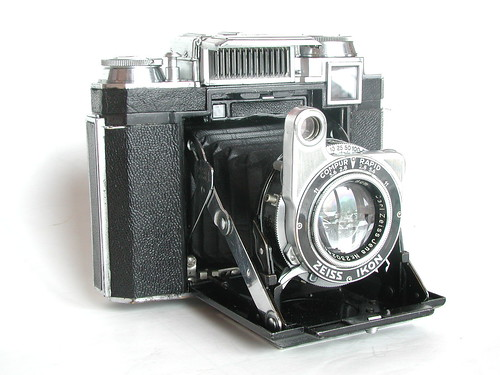

Nikon F3

Back to the last century, before touch-screen moblie phone has been invented, people have to use film to record everything in image. As the third pro-line flagship camera, Nikon F3 went famous right after it's been released. Wiht the solid quality, reliable electrical design, and lots of functions that have never been seen in the camera before, users fall in love with this camera inevitably.
Camera WikiCheck the price on Ebay
Bronica EC

Compare to the frame of sensors in cameras now, medium format would be a weird size for the current cameraman to pick up. Because it was a frame of film in the past. Comapre to the 36x24mm of the full-frame camera's sensor size, this Bronica EC can produce 60x60mm frame of photo which will contain high quality and details than the full-frame camera.
Camera WikiCheck the price on Ebay
Zeiss Ikon Super Iknota 533/16
This camera is also another 6x6 medium format camera. It was first only kept as a personal collection for me, but suprisingly, it seems functionable. The lens is not interchangable compare to the other cameras in the list, but it is conveniant for me to take it out of my pocket and directly taking a snapshot with it. The Tessar lens structure also made it charming for taking b&w pictures
Camera WikiCheck the price on Ebay